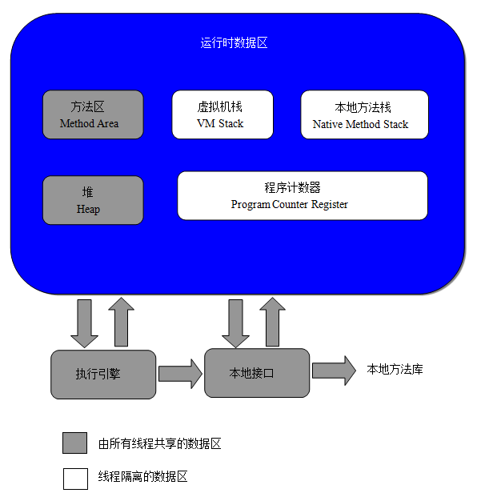

整理一下JVM的知识。
说到JVM，首先要提到的就是运行时数据区。
网上相当多的资料把运行时数据区和java内存模型弄混，这是错误的。
Java内存模型：是定义程序中各个变量的访问规则，即在虚拟机中将变量存储到内存和从内存中取出变量这样的底层细节。（参考JSR133规范)
运行时数据区是指：Java虚拟机在执行Java程序的过程中会把它所管理的内存划分为若干不同数据区域。
这两个完全不是同一概念。
和JVM相关的是运行时数据区。
JVM运行时数据区主要分为几块:
程序计数器: 当前线程正在执行的计算机指令；
虚拟机栈: 每个方法执行时创建，存储局部变量，操作数，动态链接，方法出口；
本地方法栈: 和虚拟机栈类类似。 Native方法, JVM底层，用C写的，供我们底层调用；
堆: 类实例对象。
方法区(java8以前): 类信息，常量，静态变量；
元空间Metaspace：java8以后用来存储类信息的区域。
盗用互联网上的图片：

程序计数器
线程私有。
当前线程，执行的字节码的行号指示器。
java多线程是通过线程轮流切换并分配处理器执行的方式来实现的，在任何一个时刻，一个处理器或者内核都只会执行一条线程中的指令。
因此， 为了切换线程后能恢复到正确的执行位置，每条线程都需要一个独立的程序计数器。
虚拟机栈
线程私有。
Java方法执行的内存模型。
每个方法执行时都会创建栈帧，存储局部变量、操作数栈、动态链接、方法出口等信息。
本地方法栈
线程私有。
和虚拟机栈的作用是类似的。
本地方法栈为虚拟机使用到的native方法服务。
Native方法是指java调用非java代码的接口，是用C/C++语言实现的，并且被编译成了DLL，由java去调用。
堆
所有的线程共享。
堆是java虚拟机中所管理的最大的一块区域。
存放所有的对象的实例，比如那些new出来的对象。
这一块区域是垃圾收集和管理的主要区域。
后面讲垃圾回收时，会详细的讲这一块区域的划分。
方法区
java8以前才有方法去，java8用元空间取代方法区。
所有线程共享。
主要存储：类信息、常量、静态变量、即使编译器编译后的代码。
Hotspot虚拟机用永久代来来实现方法区。
直接内存
NIO对象，可以使用native函数直接分配内存。
因此不受JVM内存大小的影响，只会受机器本地物理内存的影响。
这块区域要注意，可能会尝试物理内存的溢出异常。
java8元空间：Metaspace
在java8, 永久代（方法区）被移除。
metaspace取代方法区。
大部分类元数据都在本地内存中分配。
默认情况下，类元数据只受可用的本地内存限制，但是32位虚拟机会受可使用虚拟内存的限制。
参考资料
《深入理解Java虚拟机》-周志明 著